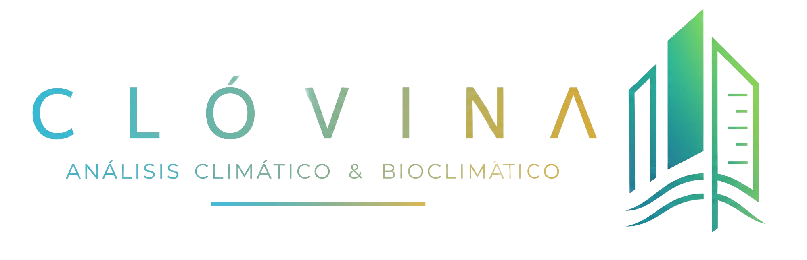

Bienvenido a

01 / Climograma de Givoni
Matriz Psicrométrica02 / Cuadro de Datos
| Muestra | Periodo | TBS Máx | TBS Mín | HR % | Zonas Confort |
|---|
03 / Resumen General
COMPATIBLE CON ARQUITECTURA BIOCLIMÁTICA TROPICAL
04 / Estrategias Arquitectónicas
05 / Esquema Convectivo
Modelado Pasivo
Reserva espacial paramétrica para la inserción de gráficos explicativos vectoriales, dinámica de vientos locales y asoleamiento pasivo.
[ Esquema de Convección Natural Pasiva ]